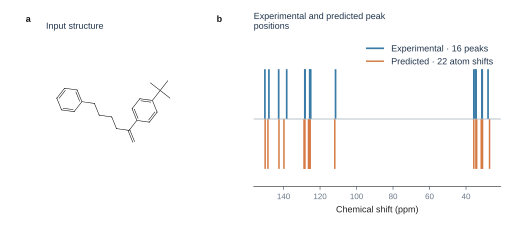

Python SDK：真实 NMR 推理
本教程把数据记录与 NMRNet 模型接口连接起来。你将查看分子记录、配置模型环境、预测逐原子位移，并与实验峰位置比较。
import json, os, sys, io, tempfile
from pathlib import Path
from IPython.display import display, SVG
root = next(p for p in [Path.cwd(), *Path.cwd().parents] if (p / 'documentation/assets').is_dir())
from openmolspec.dataset import MolecularSpectra, list_datasets
print('Registered datasets:', [c['name'] for c in list_datasets()])
Registered datasets: ['opendatalab_nmr', 'nmrspec_test', 'patent_test_10k', 'nmrexp_exp_10k', 'nmrgym_test', 'openspec_test', 'massspecgym_test', 'massspecgym_1_5']
1. 读取分子谱
附带的 NMRSpec 示例包含结构、分子式、谱记录和参考峰数组。先查看第一条，了解预测与评测所使用的字段。
data = MolecularSpectra.from_jsonl(splits={'test': root / 'documentation/assets/sdk-nmr-test-examples.jsonl'}, name='documented_nmrspec_examples', domain='experimental')
rows = data['test'].head(3)
print(json.dumps(rows[0], indent=2, ensure_ascii=False))
print('Split roles:', list(data.get_split()))
{
"inchi": "InChI=1S/C22H28/c1-18(10-8-9-13-19-11-6-5-7-12-19)20-14-16-21(17-15-20)22(2,3)4/h5-7,11-12,14-17H,1,8-10,13H2,2-4H3",
"smiles": "C=C(CCCCc1ccccc1)c1ccc(C(C)(C)C)cc1",
"formula": "C22H28",
"h_nmr": [
{
"type": "1H NMR",
"chemical_shift": "7.34 (s, 4H), 7.265 (m, 2H), 7.165 (m, 3H), 5.26 (d, J=1.6 Hz, 1H), 5.01 (t, J=1.4 Hz, 1H), 2.61 (t, J=7.8 Hz, 2H), 2.53 (t, J=7.6 Hz, 2H), 1.665 (m, 2H), 1.52 (d, J=7.7 Hz, 2H), 1.33 (s, 9H)"
}
],
"c_nmr": [
{
"type": "13C NMR",
"chemical_shift": "150.22, 148.03, 142.68, 138.28, 128.36, 128.22, 125.68, 125.58, 125.12, 111.51, 35.72, 35.03, 34.46, 31.32, 31.11, 27.93"
}
],
"modality_mask": [
1,
1
],
"_openmolspec": {
"dataset": "documented_nmrspec_examples",
"domain": "experimental",
"split": "test",
"record_locator": "sdk-nmr-test-examples.jsonl:1",
"modalities": [
"13C",
"1H"
]
},
"reference_peaks_ppm": [
150.22,
148.03,
142.68,
138.28,
128.36,
128.22,
125.68,
125.58,
125.12,
111.51,
35.72,
35.03,
34.46,
31.32,
31.11,
27.93
]
}
Split roles: ['test']
2. 配置并调用 NMRNet
OPENMOLSPEC_MODELS_ROOT 指向包含 nmrnet/ 的目录，OPENMOLSPEC_NMR_PYTHON 指向安装了模型依赖的解释器。下面生成构象并预测碳位移，每个预测值附有 0 起始原子编号。
from openmolspec.model import NMRNet
model_root = os.environ.get('OPENMOLSPEC_MODELS_ROOT')
if not model_root:
raise RuntimeError('Set OPENMOLSPEC_MODELS_ROOT to the directory containing nmrnet/; see Python SDK guide')
model = NMRNet.from_pretrained(model_root, nucleus='13C', python=os.environ.get('OPENMOLSPEC_NMR_PYTHON', sys.executable))
result = model.predict(rows[0]['smiles'])
print(json.dumps(result['records'], indent=2))
print('Checkpoint SHA-256:', result['provenance']['checkpoint_sha256'])
assert result['training_performed'] is False
[
{
"smiles": "C=C(CCCCc1ccccc1)c1ccc(C(C)(C)C)cc1",
"nucleus": "13C",
"atom_indices": [
0,
1,
2,
3,
4,
5,
6,
7,
8,
9,
10,
11,
12,
13,
14,
15,
16,
17,
18,
19,
20,
21
],
"prediction_ppm": [
111.92984008789062,
148.56301879882812,
34.59314727783203,
27.106813430786133,
30.951845169067383,
35.74639129638672,
142.5129852294922,
128.4691619873047,
128.4962158203125,
126.21155548095703,
128.5539093017578,
128.6055450439453,
139.7798614501953,
126.32313537597656,
125.47481536865234,
150.09881591796875,
34.164398193359375,
31.407787322998047,
31.511058807373047,
31.552867889404297,
125.4945297241211,
126.05933380126953
]
}
]
Checkpoint SHA-256: 0efb06c233a6e851629f695e516d94209963fb60df39194a5dbb20bd3cb9db7b
3. 评估并绘制预测
evaluate_nmr 将预测位移与实验峰匹配，给出残差和覆盖率。图中参考与预测使用同一 ppm 轴，可直接观察缺失峰、额外峰和位移差。
from openmolspec.benchmark import evaluate_nmr
reference = rows[0]['reference_peaks_ppm']
print(json.dumps(evaluate_nmr(result, [reference]), indent=2))
import matplotlib.pyplot as plt
sys.path.insert(0, str(root / 'scripts'))
from documentation_figures import render_task
figure_evidence = {'examples': [{'input': {'smiles': rows[0]['smiles']}}], 'plot': {'kind': 'nmr_peaks', 'smiles': rows[0]['smiles'], 'reference_ppm': reference, 'prediction_ppm': result['records'][0]['prediction_ppm'], 'label': 'Actual SDK inference; first documented NMRSpec molecule'}}
fig = render_task('nmr.forward.13C', figure_evidence)
image = io.StringIO()
fig.savefig(image, format='svg', metadata={'Date': None})
display(SVG(image.getvalue()))
plt.close(fig)
{
"matched_peak_mae_ppm": 0.360868186950682,
"matched_peak_rmse_ppm": 0.5066505398060095,
"peak_count_mae": 6.0,
"matched_fraction": 0.7272727272727273,
"examples": 1,
"scored_examples": 1,
"aggregation": "equal_weight_per_molecule",
"assignment": "minimum_absolute_error_without_atom_labels"
}

参考文献
Xu, F., Guo, W., Wang, F., Yao, L., Wang, H., Tang, F., Gao, Z., Zhang, L., E, W., Tian, Z.-Q., et al. Toward a unified benchmark and framework for deep learning-based prediction of nuclear magnetic resonance chemical shifts. Nature Computational Science 5, 292–300 (2025). doi:10.1038/s43588-025-00783-z. Source
Yang, L., Yang, Z., Xie, J., Wang, Y., Gao, B., Fu, T., Wei, X., Sun, J., Wu, J., He, C., Li, Y. & Gu, Q. NMRTrans: Structure Elucidation from Experimental NMR Spectra via Set Transformers. arXiv:2602.10158 (2026). Source